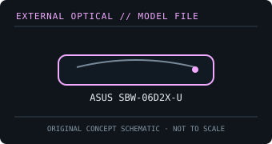

[ OPTICAL DRIVES // IDENTIFIED EXTERNAL MODEL ]
ASUS SBW-06D2X-U
Slim external 6× Blu-ray writer with USB 2.0 connection. Do not transfer its capabilities to other SBW-series revisions or newer BDXL drives.

IDENTIFICATION: Confirm the full model/suffix against the label and manufacturer documentation. Read capability is not write capability; speed ratings depend on media and recording mode.
Model-specific specifications
| Catalog subcategory | External Blu-ray drives |
|---|---|
| Exact product identifier | ASUS SBW-06D2X-U |
| Supported write formats / rates | BD-R (single/double layer) up to 6×; BD-RE up to 2×. DVD±R up to 8×, DVD+RW up to 8×, DVD-RW up to 6×, DVD-RAM up to 5×, CD-R up to 24× and CD-RW up to 16×. |
| Supported read formats / rates | BD-ROM up to 6×; DVD-ROM up to 8×; CD-ROM up to 24×. Reads BD-ROM and BD-R/RE, DVD-ROM and recordable/rewritable DVD formats, DVD-RAM, CD-ROM and recordable/rewritable CDs. |
| USB interface and power | USB 2.0 external interface; the supplied Y-cable can draw supplemental power from a second port. USB 3 ports remain backward-compatible at USB 2.0 speed. |
| Host compatibility | Windows and Mac OS X host support is described in the model documentation. Included authoring/playback software and protected Blu-ray playback depend on the host OS and compatible licensed software. |
| Model distinction | This is the slim 6× SBW model, not the full-size ASUS BW-16D1X-U; its interface is USB 2.0 and its capability set is not inferred from BDXL-family marketing. |
Host and media notes
This is the slim 6× SBW model, not the full-size ASUS BW-16D1X-U; its interface is USB 2.0 and its capability set is not inferred from BDXL-family marketing.
- Use the drive only with media types explicitly supported by the exact manual. BDXL, standard BD-R/RE and UHD Blu-ray are distinct capabilities.
- Check operating-system and playback/authoring application support independently; a USB connection alone does not provide Blu-ray codec, protected-video or UHD playback capability.
- For preservation work, record drive model/firmware, host interface, software, media type, checksums and read/verification errors with each image.
Model documentation and specification sources
- ASUS — SBW-06D2X-U support and manualsManufacturer support entry for the exact model and its downloads.
- ASUS SBW-06D2X-U user manualModel-specific manual with supported media, speed ratings and connection/power details.
Manufacturer and manual speed ratings are maxima under supported media conditions and are not a guarantee of actual sustained read/write performance on an individual disc.